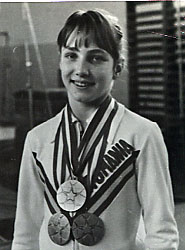

Melitta Ruhn (ROM)
1979 World AA Bronze Medalist
 Ruhn proudly displays her World Championships medals. |
Medal Total
Olympic
Games:
1 Silver, 2 Bronze
World Championships: 1 Gold, 2 Bronze
Melitta was born on April 19, 1965, in Sibiu, Romania. She began gymnastics at age 7 with teacher Rodica Filip, then continued her training at CSS Sibiu with coaches Ana Crihan and Adrian Goreac. In September 1977, she moved to Deva to train with Marta and Bela Karolyi, who helped her achieve her dream of becoming as good as Nadia.
A year after arriving in Deva, she traveled to the World Championships in Strasbourg as the team alternate. The following year was a good one for her. She finished fifth overall at the 1979 European Championships, and Melitta's solid performance at the 1979 World Championships in the team competition helped the Romanian team win its first team gold medal, beating the Soviets by less than a point. She also finished 3rd in the all-around and took another bronze on the floor. Injuries prior to the Moscow Olympics disrupted her training a bit, but she was still the second-most successful gymnast on her team, winning two individual medals (Comaneci won three). Melitta injured her knee in 1981, which kept her out of competition for much of that year. She was named to the Romanian team for the 1981 World Championships and traveled to Moscow, but ended up being the second alternate (after Aura Anghel).
Melitta graduated from high school in 1983 and entered the Bucharest Sports University, via correspondence, while simultaneously attending a Sibiu coaching school for two years. Upon graduation, she worked as a coach and led women's exercise classes. Eventually, she moved to Germany.
Competition Results
1977 1978 1980 This page was created on May 05, 2000 and was last updated on June 5, 2026.
Jr. ROM Championships: 3rd Team (category II)
ROM Championships: 5th Team
Romanian Cup: 6th AA (category III)
Gymnastics Schools Championships: 3rd AA (category II)
Jr. GDR-ROM Dual Meet: 2nd Team, 1st V
Jr. ROM-HUN Dual Meet: 1st Team, 2nd V
Jr. TCH-ROM Dual Meet: 1st Team, 2nd AA
1979
European Championships: 5th AA
GBR-ROM Dual Meet: 1st Team, 3rd AA
Intl. Championships of Romania: 4th AA
NOR-ROM Dual Meet: 1st Team, 3rd AA
World Championships: 1st Team, 3rd AA, 3rd
FX, 7th V, 8th B
GBR-ROM Dual Meet: 1st Team, 3rd AA
HOL-ROM Dual Meet: 1st Team, 2nd AA
Intl. Championships of Romania: 2nd AA
Olympics: 2nd Team, 13th AA (prelims), 3rd V,
3rd UB
ROM-SUI Dual Meet: 1st Team, 1st AA
© Gymn Forum